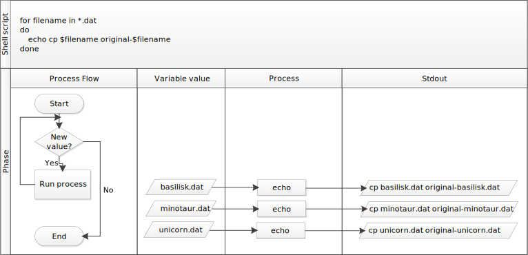

Loops
Overview
Teaching: 40 min
Exercises: 10 minQuestions
How can I perform the same actions on many different files?
Objectives
Write a loop that applies one or more commands separately to each file in a set of files.
Trace the values taken on by a loop variable during execution of the loop.
Explain the difference between a variable’s name and its value.
Explain why spaces and some punctuation characters shouldn’t be used in file names.
Demonstrate how to see what commands have recently been executed.
Re-run recently executed commands without retyping them.
Loops are a programming construct which allow us to repeat a command or set of commands for each item in a list. As such they are key to productivity improvements through automation. Similar to wildcards and tab completion, using loops also reduces the amount of typing required (and hence reduces the number of typing mistakes).
Suppose we have several hundred genome data files named basilisk.dat, minotaur.dat, unicorn.dat, and so on.
For this example,
we’ll use the creatures directory which only has three example files,
but the principles can be applied to many many more files at once.
We would like to print out the classification for each species, which is given on the second line of the file.
For each file, we would need to execute the command head -n 2 and pipe this to tail -n 1.
We’ll use a loop to solve this problem, but first let’s look at the general form of a loop:
for thing in list_of_things
do
operation_using $thing # Indentation within the loop is not required, but aids legibility
done
and we can apply this to our example like this:
$ for filename in basilisk.dat minotaur.dat unicorn.dat
> do
> head -n 2 $filename | tail -n 1
> done
CLASSIFICATION: basiliscus vulgaris
CLASSIFICATION: bos hominus
CLASSIFICATION: equus monoceros
Follow the Prompt
The shell prompt changes from
$to>and back again as we were typing in our loop. The second prompt,>, is different to remind us that we haven’t finished typing a complete command yet. A semicolon,;, can be used to separate two commands written on a single line.
When the shell sees the keyword for,
it knows to repeat a command (or group of commands) once for each item in a list.
Each time the loop runs (called an iteration), an item in the list is assigned in sequence to
the variable, and the commands inside the loop are executed, before moving on to
the next item in the list.
Inside the loop,
we call for the variable’s value by putting $ in front of it.
The $ tells the shell interpreter to treat
the variable as a variable name and substitute its value in its place,
rather than treat it as text or an external command.
In this example, the list is three filenames: basilisk.dat, minotaur.dat, and unicorn.dat.
Each time the loop iterates, it will assign a file name to the variable filename
and run the head command.
The first time through the loop,
$filename is basilisk.dat.
The interpreter runs the command head on basilisk.dat
and pipes the first two lines to the tail command,
which then prints the second line of basilisk.dat.
For the second iteration, $filename becomes
minotaur.dat. This time, the shell runs head on monotaur.dat
and pipes the first two lines to the tail command,
which then prints the second line of monotaur.dat.
For the third iteration, $filename becomes
unicorn.dat, so the shell runs the head command on that file,
and tail on the output of that.
Since the list was only three items, the shell exits the for loop.
Same Symbols, Different Meanings
Here we see
>being used a shell prompt, whereas>is also used to redirect output. Similarly,$is used as a shell prompt, but, as we saw earlier, it is also used to ask the shell to get the value of a variable.If the shell prints
>or$then it expects you to type something, and the symbol is a prompt.If you type
>or$yourself, it is an instruction from you that the shell should redirect output or get the value of a variable.
When using variables it is also
possible to put the names into curly braces to clearly delimit the variable
name: $filename is equivalent to ${filename}, but is different from
${file}name. You may find this notation in other people’s programs.
We have called the variable in this loop filename
in order to make its purpose clearer to human readers.
The shell itself doesn’t care what the variable is called;
if we wrote this loop as:
$ for x in basilisk.dat minotaur.dat unicorn.dat
> do
> head -n 2 $x | tail -n 1
> done
or:
$ for temperature in basilisk.dat minotaur.dat unicorn.dat
> do
> head -n 2 $temperature | tail -n 1
> done
it would work exactly the same way.
Don’t do this.
Programs are only useful if people can understand them,
so meaningless names (like x) or misleading names (like temperature)
increase the odds that the program won’t do what its readers think it does.
Variables in Loops
This exercise refers to the
data-shell/moleculesdirectory.lsgives the following output:cubane.pdb ethane.pdb methane.pdb octane.pdb pentane.pdb propane.pdbWhat is the output of the following code?
$ for datafile in *.pdb > do > ls *.pdb > doneNow, what is the output of the following code?
$ for datafile in *.pdb > do > ls $datafile > doneWhy do these two loops give different outputs?
Solution
The first code block gives the same output on each iteration through the loop. Bash expands the wildcard
*.pdbwithin the loop body (as well as before the loop starts) to match all files ending in.pdband then lists them usingls. The expanded loop would look like this:$ for datafile in cubane.pdb ethane.pdb methane.pdb octane.pdb pentane.pdb propane.pdb > do > ls cubane.pdb ethane.pdb methane.pdb octane.pdb pentane.pdb propane.pdb > donecubane.pdb ethane.pdb methane.pdb octane.pdb pentane.pdb propane.pdb cubane.pdb ethane.pdb methane.pdb octane.pdb pentane.pdb propane.pdb cubane.pdb ethane.pdb methane.pdb octane.pdb pentane.pdb propane.pdb cubane.pdb ethane.pdb methane.pdb octane.pdb pentane.pdb propane.pdb cubane.pdb ethane.pdb methane.pdb octane.pdb pentane.pdb propane.pdb cubane.pdb ethane.pdb methane.pdb octane.pdb pentane.pdb propane.pdbThe second code block lists a different file on each loop iteration. The value of the
datafilevariable is evaluated using$datafile, and then listed usingls.cubane.pdb ethane.pdb methane.pdb octane.pdb pentane.pdb propane.pdb
Limiting Sets of Files
What would be the output of running the following loop in the
data-shell/moleculesdirectory?$ for filename in c* > do > ls $filename > done
- No files are listed.
- All files are listed.
- Only
cubane.pdb,octane.pdbandpentane.pdbare listed.- Only
cubane.pdbis listed.Solution
4 is the correct answer.
*matches zero or more characters, so any file name starting with the letter c, followed by zero or more other characters will be matched.How would the output differ from using this command instead?
$ for filename in *c* > do > ls $filename > done
- The same files would be listed.
- All the files are listed this time.
- No files are listed this time.
- The files
cubane.pdbandoctane.pdbwill be listed.- Only the file
octane.pdbwill be listed.Solution
4 is the correct answer.
*matches zero or more characters, so a file name with zero or more characters before a letter c and zero or more characters after the letter c will be matched.
Saving to a File in a Loop - Part One
In the
data-shell/moleculesdirectory, what is the effect of this loop?for alkanes in *.pdb do echo $alkanes cat $alkanes > alkanes.pdb done
- Prints
cubane.pdb,ethane.pdb,methane.pdb,octane.pdb,pentane.pdbandpropane.pdb, and the text frompropane.pdbwill be saved to a file calledalkanes.pdb.- Prints
cubane.pdb,ethane.pdb, andmethane.pdb, and the text from all three files would be concatenated and saved to a file calledalkanes.pdb.- Prints
cubane.pdb,ethane.pdb,methane.pdb,octane.pdb, andpentane.pdb, and the text frompropane.pdbwill be saved to a file calledalkanes.pdb.- None of the above.
Solution
- The text from each file in turn gets written to the
alkanes.pdbfile. However, the file gets overwritten on each loop interation, so the final content ofalkanes.pdbis the text from thepropane.pdbfile.
Saving to a File in a Loop - Part Two
Also in the
data-shell/moleculesdirectory, what would be the output of the following loop?for datafile in *.pdb do cat $datafile >> all.pdb done
- All of the text from
cubane.pdb,ethane.pdb,methane.pdb,octane.pdb, andpentane.pdbwould be concatenated and saved to a file calledall.pdb.- The text from
ethane.pdbwill be saved to a file calledall.pdb.- All of the text from
cubane.pdb,ethane.pdb,methane.pdb,octane.pdb,pentane.pdbandpropane.pdbwould be concatenated and saved to a file calledall.pdb.- All of the text from
cubane.pdb,ethane.pdb,methane.pdb,octane.pdb,pentane.pdbandpropane.pdbwould be printed to the screen and saved to a file calledall.pdb.Solution
3 is the correct answer.
>>appends to a file, rather than overwriting it with the redirected output from a command. Given the output from thecatcommand has been redirected, nothing is printed to the screen.
Let’s continue with our example in the data-shell/creatures directory.
Here’s a slightly more complicated loop:
$ for filename in *.dat
> do
> echo $filename
> head -n 100 $filename | tail -n 20
> done
The shell starts by expanding *.dat to create the list of files it will process.
The loop body
then executes two commands for each of those files.
The first, echo, just prints its command-line arguments to standard output.
For example:
$ echo hello there
prints:
hello there
In this case,
since the shell expands $filename to be the name of a file,
echo $filename just prints the name of the file.
Note that we can’t write this as:
$ for filename in *.dat
> do
> $filename
> head -n 100 $filename | tail -n 20
> done
because then the first time through the loop,
when $filename expanded to basilisk.dat, the shell would try to run basilisk.dat as a program.
Finally,
the head and tail combination selects lines 81-100
from whatever file is being processed
(assuming the file has at least 100 lines).
Spaces in Names
Spaces are used to separate the elements of the list that we are going to loop over. If one of those elements contains a space character, we need to surround it with quotes, and do the same thing to our loop variable. Suppose our data files are named:
red dragon.dat purple unicorn.datTo loop over these files, we would need to add double quotes like so:
$ for filename in "red dragon.dat" "purple unicorn.dat" > do > head -n 100 "$filename" | tail -n 20 > doneIt is simpler just to avoid using spaces (or other special characters) in filenames.
The files above don’t exist, so if we run the above code, the
headcommand will be unable to find them, however the error message returned will show the name of the files it is expecting:head: cannot open ‘red dragon.dat’ for reading: No such file or directory head: cannot open ‘purple unicorn.dat’ for reading: No such file or directoryTry removing the quotes around
$filenamein the loop above to see the effect of the quote marks on spaces. Note that we get a result from the loop command for unicorn.dat when we run this code in thecreaturesdirectory:head: cannot open ‘red’ for reading: No such file or directory head: cannot open ‘dragon.dat’ for reading: No such file or directory head: cannot open ‘purple’ for reading: No such file or directory CGGTACCGAA AAGGGTCGCG CAAGTGTTCC
We would like to modify each of the files in data-shell/creatures, but also save a version
of the original files, naming the copies original-basilisk.dat and original-unicorn.dat.
We can’t use:
$ cp *.dat original-*.dat
because that would expand to:
$ cp basilisk.dat minotaur.dat unicorn.dat original-*.dat
This wouldn’t back up our files, instead we get an error:
cp: target `original-*.dat' is not a directory
This problem arises when cp receives more than two inputs. When this happens, it
expects the last input to be a directory where it can copy all the files it was passed.
Since there is no directory named original-*.dat in the creatures directory we get an
error.
Instead, we can use a loop:
$ for filename in *.dat
> do
> cp $filename original-$filename
> done
This loop runs the cp command once for each filename.
The first time,
when $filename expands to basilisk.dat,
the shell executes:
cp basilisk.dat original-basilisk.dat
The second time, the command is:
cp minotaur.dat original-minotaur.dat
The third and last time, the command is:
cp unicorn.dat original-unicorn.dat
Since the cp command does not normally produce any output, it’s hard to check
that the loop is doing the correct thing.
However, we learned earlier how to print strings using echo, and we can modify the loop
to use echo to print our commands without actually executing them.
As such we can check what commands would be run in the unmodified loop.
The following diagram
shows what happens when the modified loop is executed, and demonstrates how the
judicious use of echo is a good debugging technique.

Nelle’s Pipeline: Processing Files
Nelle is now ready to process her data files using goostats — a shell script written by her supervisor.
This calculates some statistics from a protein sample file, and takes two arguments:
- an input file (containing the raw data)
- an output file (to store the calculated statistics)
Since she’s still learning how to use the shell, she decides to build up the required commands in stages. Her first step is to make sure that she can select the right input files — remember, these are ones whose names end in ‘A’ or ‘B’, rather than ‘Z’. Starting from her home directory, Nelle types:
$ cd north-pacific-gyre/2012-07-03
$ for datafile in NENE*[AB].txt
> do
> echo $datafile
> done
NENE01729A.txt
NENE01729B.txt
NENE01736A.txt
...
NENE02043A.txt
NENE02043B.txt
Her next step is to decide
what to call the files that the goostats analysis program will create.
Prefixing each input file’s name with “stats” seems simple,
so she modifies her loop to do that:
$ for datafile in NENE*[AB].txt
> do
> echo $datafile stats-$datafile
> done
NENE01729A.txt stats-NENE01729A.txt
NENE01729B.txt stats-NENE01729B.txt
NENE01736A.txt stats-NENE01736A.txt
...
NENE02043A.txt stats-NENE02043A.txt
NENE02043B.txt stats-NENE02043B.txt
She hasn’t actually run goostats yet,
but now she’s sure she can select the right files and generate the right output filenames.
Typing in commands over and over again is becoming tedious, though, and Nelle is worried about making mistakes, so instead of re-entering her loop, she presses the up arrow. In response, the shell redisplays the whole loop on one line (using semi-colons to separate the pieces):
$ for datafile in NENE*[AB].txt; do echo $datafile stats-$datafile; done
Using the left arrow key,
Nelle backs up and changes the command echo to bash goostats:
$ for datafile in NENE*[AB].txt; do bash goostats $datafile stats-$datafile; done
When she presses Enter,
the shell runs the modified command.
However, nothing appears to happen — there is no output.
After a moment, Nelle realizes that since her script doesn’t print anything to the screen any longer,
she has no idea whether it is running, much less how quickly.
She kills the running command by typing Ctrl-C,
uses up-arrow to repeat the command,
and edits it to read:
$ for datafile in NENE*[AB].txt; do echo $datafile; bash goostats $datafile stats-$datafile; done
Beginning and End
We can move to the beginning of a line in the shell by typing
Ctrl-aand to the end usingCtrl-e.
When she runs her program now, it produces one line of output every five seconds or so:
NENE01729A.txt
NENE01729B.txt
NENE01736A.txt
...
1518 times 5 seconds,
divided by 60,
tells her that her script will take about two hours to run.
As a final check,
she opens another terminal window,
goes into north-pacific-gyre/2012-07-03,
and uses cat stats-NENE01729B.txt
to examine one of the output files.
It looks good,
so she decides to get some coffee and catch up on her reading.
Those Who Know History Can Choose to Repeat It
Another way to repeat previous work is to use the
historycommand to get a list of the last few hundred commands that have been executed, and then to use!123(where “123” is replaced by the command number) to repeat one of those commands. For example, if Nelle types this:$ history | tail -n 5456 ls -l NENE0*.txt 457 rm stats-NENE01729B.txt.txt 458 bash goostats NENE01729B.txt stats-NENE01729B.txt 459 ls -l NENE0*.txt 460 historythen she can re-run
goostatsonNENE01729B.txtsimply by typing!458.
Other History Commands
There are a number of other shortcut commands for getting at the history.
Ctrl-Renters a history search mode “reverse-i-search” and finds the most recent command in your history that matches the text you enter next. PressCtrl-Rone or more additional times to search for earlier matches.!!retrieves the immediately preceding command (you may or may not find this more convenient than using the up-arrow)!$retrieves the last word of the last command. That’s useful more often than you might expect: afterbash goostats NENE01729B.txt stats-NENE01729B.txt, you can typeless !$to look at the filestats-NENE01729B.txt, which is quicker than doing up-arrow and editing the command-line.
Doing a Dry Run
A loop is a way to do many things at once — or to make many mistakes at once if it does the wrong thing. One way to check what a loop would do is to
echothe commands it would run instead of actually running them.Suppose we want to preview the commands the following loop will execute without actually running those commands:
$ for file in *.pdb > do > analyze $file > analyzed-$file > doneWhat is the difference between the two loops below, and which one would we want to run?
# Version 1 $ for file in *.pdb > do > echo analyze $file > analyzed-$file > done# Version 2 $ for file in *.pdb > do > echo "analyze $file > analyzed-$file" > doneSolution
The second version is the one we want to run. This prints to screen everything enclosed in the quote marks, expanding the loop variable name because we have prefixed it with a dollar sign.
The first version redirects the output from the command
echo analyze $fileto a file,analyzed-$file. A series of files is generated:analyzed-cubane.pdb,analyzed-ethane.pdbetc.Try both versions for yourself to see the output! Be sure to open the
analyzed-*.pdbfiles to view their contents.
Nested Loops
Suppose we want to set up up a directory structure to organize some experiments measuring reaction rate constants with different compounds and different temperatures. What would be the result of the following code:
$ for species in cubane ethane methane > do > for temperature in 25 30 37 40 > do > mkdir $species-$temperature > done > doneSolution
We have a nested loop, i.e. contained within another loop, so for each species in the outer loop, the inner loop (the nested loop) iterates over the list of temperatures, and creates a new directory for each combination.
Try running the code for yourself to see which directories are created!
Key Points
A
forloop repeats commands once for every thing in a list.Every
forloop needs a variable to refer to the thing it is currently operating on.Use
$nameto expand a variable (i.e., get its value).${name}can also be used.Do not use spaces, quotes, or wildcard characters such as ‘*’ or ‘?’ in filenames, as it complicates variable expansion.
Give files consistent names that are easy to match with wildcard patterns to make it easy to select them for looping.
Use the up-arrow key to scroll up through previous commands to edit and repeat them.
Use
Ctrl-Rto search through the previously entered commands.Use
historyto display recent commands, and!numberto repeat a command by number.